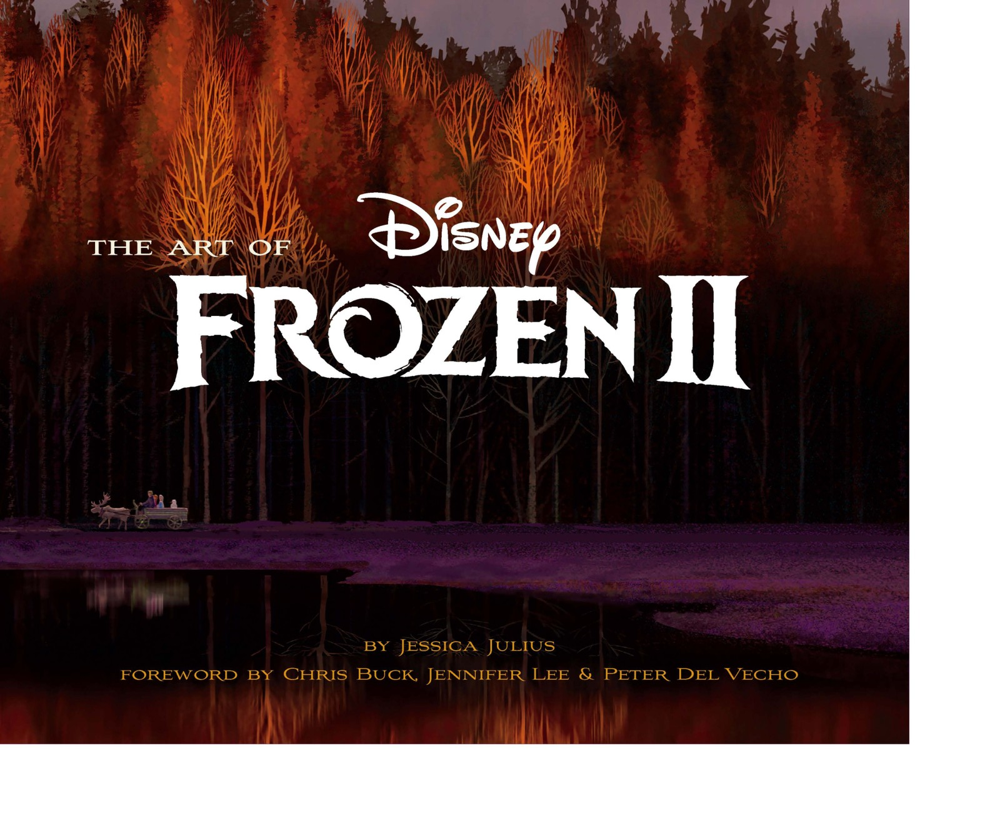

🎨 图鉴 · 宣传图
主视觉图
设定集书装与视觉纲领
6
本卷页数
🖼️
图鉴
中/英
双语
F1设定集的封面画描绘安娜与克斯托夫乘驯鹿雪橇夜行于雪山隘口——这一母题在书中被明确记载为原书封面画。书名页与前后环衬则延续了「冰字标题 + 北欧织物纹样」的装帧语言。
🎬 宣传图
主视觉图
两本官方设定集的封面与书装设计——「用一张画概括一部电影」的视觉功课。
5
书装
2
设定集
封面
环衬
原书
逐页核对
🎬 主视觉（Key Art）是「用一个画面传达电影核心主题」的视觉功课。官方设定集的封面与环衬是其中最精致的品类——它们往往由首席视觉开发艺术家操刀，浓缩整部电影或整本书的视觉纲领。
❄️ 《The Art of Frozen》书装
F1设定集的封面画描绘安娜与克斯托夫乘驯鹿雪橇夜行于雪山隘口——这一母题在书中被明确记载为原书封面画。书名页与前后环衬则延续了「冰字标题 + 北欧织物纹样」的装帧语言。

《The Art of Frozen》书封
F1官方设定集封面：冰字标题下，安娜与克斯托夫乘驯鹿雪橇夜行于雪山隘口——书中记载这正是原书封面画。

《The Art of Frozen》书名页
F1官方设定集书名页：作者 Charles Solomon，John Lasseter 作序，导演 Chris Buck 与 Jennifer Lee 作前言——扉页文字记录了这本书的「全明星」阵容。
🍂 《The Art of Frozen II》书装
F2设定集的封面是「冰晶棱镜中的多重艾莎」——折射意象直接呼应艾莎在阿塔霍兰中直面多重自我的剧情；另一版封面与扉页则以秋日魔法森林中的雪橇剪影开卷。环衬的四元素菱形纹是全书视觉体系的「壁纸」。

《The Art of Frozen II》封面
F2官方设定集封面（Justin Cram / Brittney Lee）：冰晶棱镜中的多重艾莎倒影——「水晶宫折射」正是F2艾莎魔法与自我认知的核心意象。

F2封面 · 秋日森林版
《The Art of Frozen II》秋日森林版封面：雪橇剪影驶向森林，作者 Jessica Julius，导演与制片人联名作序。

F2扉页概念画
书名页背景：秋日魔法森林的紫色倒影与 Chronicle Books 标志——故事从森林深处开始。

F2环衬 · 四元素菱形纹
F2书前后环衬的菱形冰晶符号阵列：水、风、地、火四元素的纹章化排布，是全书视觉体系的「壁纸」。
👭 姐妹主题
姐妹羁绊是系列的核心主题：设定集里的姐妹草图、早期角色像与「Show Yourself」色彩概念，记录了这对银幕姐妹在纸面上的演变。

结局·各自为王
F2结局中艾莎留在魔法森林、安娜加冕阿伦黛尔女王，姐妹各自为王但始终相连。

童年玩雪
姐妹最快乐的童年时光，也是这场游戏的失控改变了一切。

姐妹草图与 Sisters Summit
设定集里的幼年姐妹速写与「姐妹峰会」访谈——「是两姐妹互相拯救」。
📌 本页要点
本页核心要点：①❄️ 《The Art of Frozen》书装：F1设定集的封面画描绘安娜与克斯托夫乘驯鹿雪橇夜行于雪山隘口——这一母题在书中被明确记载为原书封面画。书名页与前后环衬则延续了「冰字标题 + 北欧织物纹样」的装帧语言。…；②🍂 《The Art of Frozen II》书装：F2设定集的封面是「冰晶棱镜中的多重艾莎」——折射意象直接呼应艾莎在阿塔霍兰中直面多重自我的剧情；另一版封面与扉页则以秋日魔法森林中的雪橇剪影开卷。环衬的四元素菱形纹是全书视觉体系的「壁纸」。…；③👭 姐妹主题：姐妹羁绊是系列的核心主题：设定集里的姐妹草图、早期角色像与「Show Yourself」色彩概念，记录了这对银幕姐妹在纸面上的演变。…。来源：电影正典、官方设定集与官方小说综合梳理。